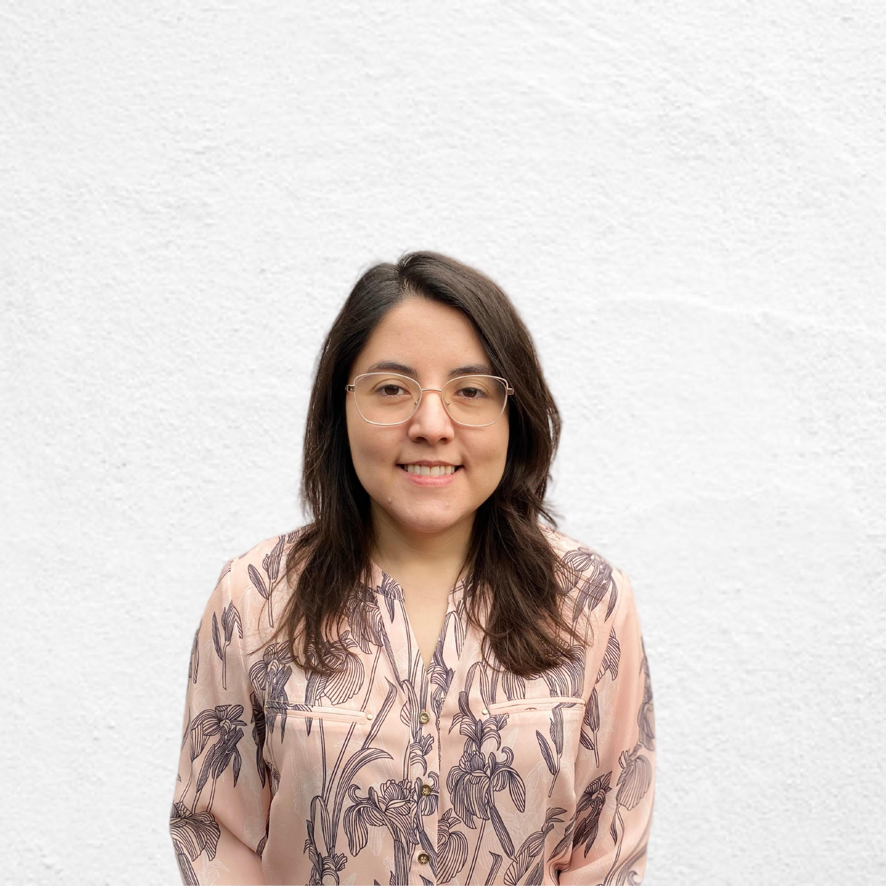

Curriculum Vitae - Yesmin Pizarro

Yesmin Pizarro
Ver Portafolio
Resumen
Me he desarrollado en el área Investigación y Desarrollo en la Industria Farmacéutica. Tengo experiencia
formulando nuevos productos, diseñando estudios de estabilidad, evaluando materias primas y desarrollando
métodos de manufactura. Manejo de desarrollo controlado, diseño de experimentos, análisis de riesgo y
estadística asociada. Conocimiento de análisis de datos con Python, Pandas, SQL. Fundamentos de Data Science y
Machine Learning. Manejo de SAP y Excel a nivel usuario. Tengo nivel avanzado de traducción del Inglés y
actualmente mejorando el idioma hablado en el nivel intermedio avanzado.
EXPERIENCIA LABORAL
FORMULADORA / LABORATORIOS SAVAL
SEP 2022 - Actualidad
- Desarrollo de productos nuevos y reformulaciones bajo principios de calidad por diseño, manejo de gestión
del riesgo y diseño de experimentos.
- Planificación de lotes piloto y estudios de estabilidad
- Transferencia de procesos de manufactura de productos nuevos a planta industrial.
- Validación prospectiva de procesos de manufactura.
- Confección de especificaciones de producto terminado principios activos y colaboración en el desarrollo de
met odologías analíticas.
FORMULADORA / LABORATORIOS ABBOTT
SEP 2021 - AGO 2022
- Desarrollo de productos nuevos y reformulaciones bajo principios de calidad por diseño, manejo de gestión
del riesgo y diseño de experimentos.
- Planificación de lotes piloto y estudios de estabilidad
- Transferencia de procesos de manufactura de productos nuevos a planta industrial.
- Validación prospectiva de procesos de manufactura.
- Confección de especificaciones de producto terminado principios activos y colaboración en el desarrollo de
met odologías analíticas.
ENCARGADA DE DESARROLLO GALÉNICO / LABORATORIOS SAVAL S.A.
MAR 2019 - AGO 2021
- Evaluación técnica para la compra de nuevas materias primas y su efecto en el producto
terminado. Realización de pruebas de fabricación en planta productiva y piloto. Preparación de documentos
para sol icitud de ampliación del registro sanitario.
JEFA DE CONTROL DE CALIDAD / LABORATORIO NOVOBELLE SPA
ENE 2017 - JUN 2018
- Análisis de producto terminado, materias primas y material de envase para productoscosméticos de bajo riesgo
- Desarrollo de métodos a nalíticos para productos nuevos y materias primas.
EDUCACIÓN
- Química Farmacéutica - Universidad de Chile / 2019
- Magister en Ciencias Farmacéuticas - Universidad de Chile / 2012
Formación y Capacitaciones
- Curso: Introducción a las Buenas Prácticas de Desarrollo / Feb 2023
- Curso Gestión del Riesgo - Terra Farma / Sep 2022
- Bootcamp Data Science - Desafío Latam / May 2022
- Basic Statistics . University of Amsterdam / Ene 2021
- Validación de Procesos Farmacéutios - Formar Chile / Jul 2020